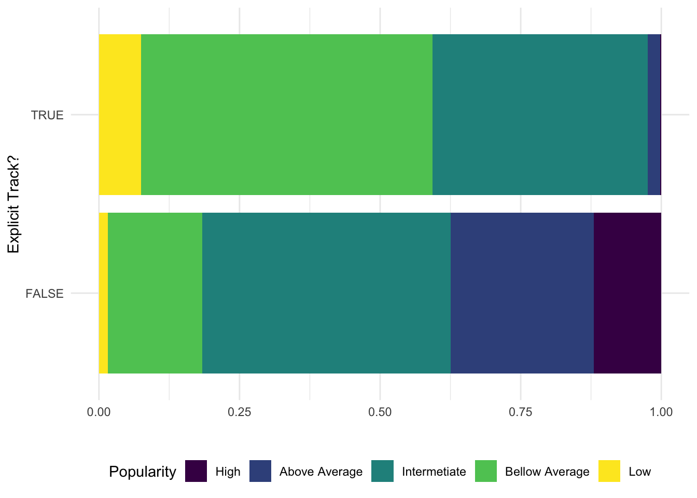

library(tidyverse)## ── Attaching packages ─────────────────────────────────────── tidyverse 1.3.1 ──## ✓ ggplot2 3.3.5 ✓ purrr 0.3.4
## ✓ tibble 3.1.5 ✓ dplyr 1.0.7
## ✓ tidyr 1.1.3 ✓ stringr 1.4.0
## ✓ readr 2.0.1 ✓ forcats 0.5.1## ── Conflicts ────────────────────────────────────────── tidyverse_conflicts() ──
## x dplyr::filter() masks stats::filter()
## x dplyr::lag() masks stats::lag()library(dplyr)
library(tidytuesdayR)
library(ggplot2)
library(tidyverse)
library(devtools) ## Loading required package: usethis##
## Attaching package: 'devtools'## The following object is masked from 'package:tidytuesdayR':
##
## github_patlibrary(openintro)## Loading required package: airports## Loading required package: cherryblossom## Loading required package: usdatalibrary(ggthemes)
library(gplots) ##
## Attaching package: 'gplots'## The following object is masked from 'package:stats':
##
## lowesslibrary(RColorBrewer) tuesdata <- tidytuesdayR::tt_load(2021, week = 38)## --- Compiling #TidyTuesday Information for 2021-09-14 ----## --- There are 2 files available ---## --- Starting Download ---##
## Downloading file 1 of 2: `billboard.csv`
## Downloading file 2 of 2: `audio_features.csv`## --- Download complete ---billboard <- tuesdata$billboard
audio_features<- tuesdata$audio_featuresaudio_2 <- audio_features %>%
mutate(ranking_type=
cut(spotify_track_popularity,
breaks = c(0,10,30,60,80,100),
labels= c("High", "Above Average", "Intermetiate", "Bellow Average", "Low")))audio_2 %>%
count(spotify_track_explicit, ranking_type)## # A tibble: 13 × 3
## spotify_track_explicit ranking_type n
## <lgl> <fct> <int>
## 1 FALSE High 2548
## 2 FALSE Above Average 5383
## 3 FALSE Intermetiate 9354
## 4 FALSE Bellow Average 3547
## 5 FALSE Low 343
## 6 FALSE <NA> 274
## 7 TRUE High 7
## 8 TRUE Above Average 64
## 9 TRUE Intermetiate 1126
## 10 TRUE Bellow Average 1526
## 11 TRUE Low 219
## 12 TRUE <NA> 6
## 13 NA <NA> 5106audio_2 %>%
drop_na(spotify_track_explicit, ranking_type) %>%
ggplot() +
geom_bar(aes(x = spotify_track_explicit, fill = ranking_type), position = "fill") +
ylab("" ) +
xlab("Explicit Track?") +
scale_fill_viridis_d("Popularity") +
coord_flip() +
theme_minimal() +
theme(legend.position = "bottom")
After exploring the dataset variables I thought it would be really interesting to visualize the distribution of song popularity levels deciding whether they were explicit tracks or not. In spotify the songs in the top 10 are the most popular but the ranking runs until 100. By creating levels of popularity, one can see this distribution more clearly in the bar plots. This plot shows that in general, non-explicit songs are more popular on Spotify, which is something I didn’t expect.
Link to Data: https://raw.githubusercontent.com/rfordatascience/tidytuesday/master/data/2021/2021-09-14/billboard.csv’